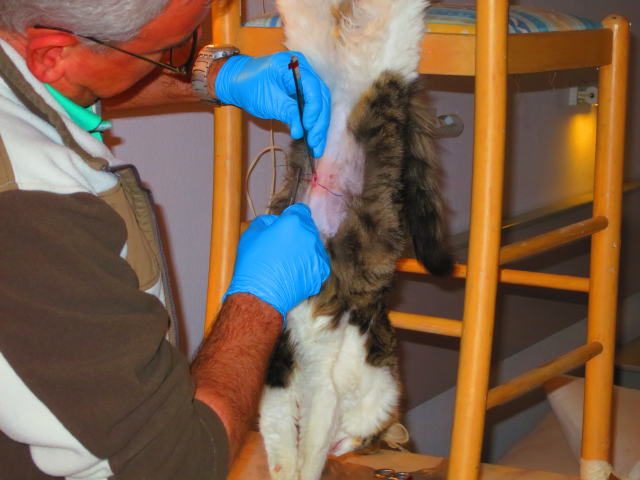

2015
Diese Lage unterstützt die Atmung, die Herztätigkeit wird positiv beeinflußt und eine optimale Durchblutung des Gehirns wird so gewährleistet.
| Mo | Di | Mi | Do | Fr |
|---|---|---|---|---|
| 10 - 12 Uhr | 10 - 12 Uhr | 10 - 12 Uhr | 10 - 12 Uhr | 10 - 12 Uhr |
| 16 - 19 Uhr | 16 - 19 Uhr | Geschlossen | 16 - 19 Uhr | 16 - 19 Uhr |
Sozial engagiert wir uns im Verein Tierärzte ohne Grenzen" e.V.
Durch das Elend der wilden Hunde und Katzen auf Rhodos stark beeindruckt engagiert wir uns seit 2011 intensiv im RAWS, dem Tierschutzverein Rhodos und arbeiten ehrenamtlich auch direkt vor Ort. Weiterhin ist er im Vorstand der Lehmann Stiftung für das Miteinander von Mensch, Tier und Natur tätig.
Diese Lage unterstützt die Atmung, die Herztätigkeit wird positiv beeinflußt und eine optimale Durchblutung des Gehirns wird so gewährleistet.
Hier führt der griechische Kollege unter meiner Anleitung einen Eingriff durch. Wie sich herausstellte, haben die Griechischen Kollegen auch durch die Kürzere Studienzeit, weit weniger Erfahrung als wir in Deutschland.
Da nur wenig Touristen die Thermen von Kallithea besuchen und sich so keiner über eventuelle Futterreste beschweren kann. Und die momentan kleine Katzengemeinde weiß das ganz genau. Auch im Gehege selbst ist es eher ruhig.
Das Buffet ist eröffnet! Wir bedanken uns herzlich für all die Spenden. Der Katzengemeinde scheint es zu schmecken.